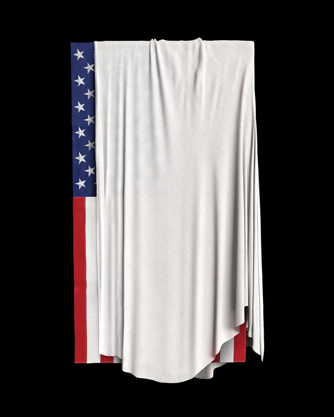

| 文章 | 章节 | 下一项 |
Are We Doomed?
To head off the next insurrection, we’ll need to practice envisioning the worst.
by George Packer

A year after the insurrection, I’m trying to imagine the death of American democracy. It’s somehow easier to picture the Earth blasted and bleached by global warming, or the human brain overtaken by the tyranny of artificial intelligence, than to foresee the end of our 250-year experiment in self-government.
The usual scenarios are unconvincing. The country is not going to split into two hostile sections and fight a war of secession. No dictator will send his secret police to round up dissidents in the dead of night. Analogies like these bring the comfort of at least being familiar. Nothing has aided Donald Trump more than Americans’ failure of imagination. It’s essential to picture an unprecedented future so that what may seem impossible doesn’t become inevitable.
Before January 6, no one—including intelligence professionals—could have conceived of a president provoking his followers to smash up the Capitol. Even the rioters livestreaming in National Statuary Hall seemed stunned by what they were doing. The siege felt like a wild shot that could have been fatal. For a nanosecond, shocked politicians of both parties sang together from the hymnal of democracy. But the unity didn’t last. The past months have made it clear that the near miss was a warning shot.
If the end comes, it will come through democracy itself. Here’s one way I imagine it could happen: In 2024, disputed election results in several states lead to tangled proceedings in courtrooms and legislatures. The Republican Party’s long campaign of undermining faith in elections leaves voters on both sides deeply skeptical of any outcome they don’t like. When the next president is finally chosen by the Supreme Court or Congress, half the country explodes in rage. Protests soon turn violent, and the crowds are met with lethal force by the state, while instigators firebomb government buildings. Neighborhoods organize self-defense groups, and law-enforcement officers take sides or go home. Predominantly red or blue counties turn on political minorities. A family with a Biden-Harris sign has to abandon home on a rural road and flee to the nearest town. A blue militia sacks Trump National Golf Club Bedminster; a red militia storms Oberlin College. The new president takes power in a state of siege.
Few people would choose this path. It’s the kind of calamity into which fragile societies stumble when their leaders are reckless, selfish, and shortsighted. But some Americans actually long for an armed showdown. In an article for the Claremont Review of Books imagining how the cultural conflict between blue California and red Texas might play out, Michael Anton, a former Trump White House adviser, recently wrote:
If the Lone Star way of life is to survive, Texans must fight for it. Then we shall see whether California’s long experiment with postmodern deracination and anti-masculinity can stand up to Texas’s more robust embrace of the old virtues. I’m not a betting man, but were that conflict to erupt, my money would be on Texas.
Imagining the worst is a civic duty; cheering it on is political arson.
Another, likelier scenario is widespread cynicism. Following the election crisis, protests burn out. Americans lapse into acquiescence, believing that all leaders lie, all voting is rigged, all media are bought, corruption is normal, and any appeal to higher values such as freedom and equality is either fraudulent or naive. The loss of democracy turns out not to matter all that much. The hollowed core of civic life brings a kind of relief. Citizens indulge themselves in self-care and the metaverse, where politics turns into a private game and algorithms drive Americans into ever more extreme views that have little relation to reality or relevance to those in power. There’s enough wealth to keep the population content. America’s transformation into Russia is complete.
Listen to an interview with William J. Walker, sergeant-at-arms of the U.S. House of Representatives, on The Experiment.
Listen and subscribe: Apple Podcasts | Spotify | Stitcher | Google Podcasts
We know what’s driving us toward this cataclysm: not simply Trump, but the Republican Party. By the usual standards, Trump’s postpresidency has been as pathetic as the forced exile of any minor dictator—Idi Amin poolside in Jeddah. Much of Trump’s nongolfing time is devoted to fending off criminal charges against his business. Banned from Twitter and Facebook, he started a blog that was so anemic, he had to shut it down. His sore-loser rallies are desultory. And yet, in the year since the insurrection, the party has aligned itself so completely with his sense of grievance and lust for revenge that there’s no room for dissent.
The insurrection and the lie that instigated it are not tools that Republicans can put away when it suits them.
Establishment Republicans believe they’ve found a way to return to power: mollify the base and keep Trump at a distance, while appealing to suburban moderates with conventional issues such as education and inflation. Sooner or later, the party will be cleansed of Trump’s stain. But this is wishful thinking, and not just because he’s almost certain to run again in 2024. A party can’t be half-democratic and half-authoritarian. The insurrection and the lie that instigated it are not tools that Republicans can put away when it suits them. The corruption is too deep.
David A. Graham: January 6 has become the New Lost Cause of Donald Trump
Most Republican voters believe that the last election was stolen and that the next one likely will be too. Some have come to embrace the insurrection as a sacred cause. Ashli Babbitt, the invader killed by a Capitol Police officer, has become a martyr. Steve Bannon’s podcast, which rallies the conspiracy-minded to take over the party from the ground up, has tens of millions of downloads. “Election security” (a euphemism for the myth of rampant fraud) has become the top issue for candidates in heavily Republican states like Oklahoma, where an extremist pastor named Jackson Lahmeyer is running against Senator James Lankford over his vote to certify President Joe Biden’s win. Even the “moderate” Glenn Youngkin, Virginia’s new governor, refused to acknowledge Biden as the legitimate president until after the state’s Republican nominating convention. Republicans who dared to criticize Trump have become the objects of more visceral hatred than any Democrat; most have prudently gone silent. Those few who have the temerity to tell the truth are being pushed out of the party.
Meanwhile, Republican lawmakers around the country have spent the year stacking state election offices with partisans who can be counted on to do Trump’s bidding next time. State legislatures have tried, in many cases successfully, to pass laws that will make it easier to manipulate or overturn election results and intimidate nonpartisan officials by criminalizing minor infractions. In state after state, Republicans have tried to make it harder for Americans, especially Democratic constituencies, to vote. This tireless campaign of legislation and disinformation has set in motion an irreversible process of electoral sabotage.
In a sense, the Republican Party now functions like an insurgency. It has a legal, legitimate wing that conducts politics as usual and an underground wing that threatens violence. The first wing is made up of leaders such as Senator Mitch McConnell and Representative Kevin McCarthy, who oppose Democratic bills, stoke conservative anger over progressive policies, and try to stay clear of Trump’s fantasies and vendettas. But every day they collaborate with party figures in the underground wing, whose lies mobilize the base, and whose goal is not so much to refight the last election as to give a pretext for fixing future ones. McConnell and Senator Lindsey Graham quietly bemoan Trump’s obsession with fraud, as if “Stop the Steal” is just a personal fixation that hurts the party, not a path to power.
Not even Senator Mitt Romney will take a single step that could save democracy. The Freedom to Vote Act is a compromise bill between progressive and moderate Democrats that would establish national rules for voting rights—heading off state laws that limit ballot access and enable partisan attempts to throw out legitimate votes. But Romney won’t join Democrats to pass it, or even let it be brought up for debate. (No Republican will—which is why the filibuster has become such a powerful weapon in the hands of antidemocrats.) Romney doesn’t lack moral courage. He voted twice, once as the lone Republican, to throw Trump out of office. But after that crisis passed, he returned to the narrow thinking of a party man. It seems Romney can’t bring himself to imagine that democracy is threatened not just by Trump, but by his own party.
Democrats suffer from a different failure of imagination. They regularly sound the alarm about the threat to democracy, but it is one of many alarms, along with those over the pandemic, child care, health care, criminal justice, guns, climate change. All of these deserve urgent attention, but they can’t be equally urgent. Biden has spent far less of his political capital on saving democracy than on passing an infrastructure bill. According to a Grinnell College poll in October, only 35 percent of Democrats believe that American democracy faces a “major threat.” The figure is twice as large for Republicans—whose belief in a major threat is the threat. Delusion about the danger prevails in both parties.
If Mitt Romney and Susan Collins are all that stand between the republic and its foes, we’re doomed.
When Democrats talk about the threat, they focus on disenfranchisement, describing the new Republican election laws as “Jim Crow 2.0.” The language, by provocatively invoking that terrible history, highlights the racial bias in the laws. But the threat we face is a new one; it requires new thinking. Through most of American history, both parties, while excluding large numbers of Americans from the franchise, basically accepted the choice of the electorate—and that is no longer true. The supreme danger now is not that voters in urban counties will have a harder time finding a drop box, or that some states will shorten the mail-ballot application window. The danger is that the express will of the American people could be overthrown.
Failures of imagination result from the expectation that what has always happened will continue to happen, even in the face of mounting evidence to the contrary. They console us with the belief that the worst won’t befall people like us. Europe had never known a Hitler, and so the Western powers thought they were dealing with a comic-opera maniac, even as he made no secret of his plans for a genocidal slave empire. The United States had never seen mass slaughter by foreign terrorists on its soil, and so the planes of September 11 seemed to come out of the blue, though al-Qaeda had been trying to kill Americans for a decade. Citizens of liberal democracies are particularly unequipped to see these eruptions in history coming, because our system of government is founded, as Jefferson wrote, on a belief in “the sufficiency of human reason for the care of human affairs.” It’s hard to accept that the foundation of democracy is quite this fragile.
From the September 2021 issue: 9/11 was a warning of what was to come
For all the violence and oppression of American history, we’ve enjoyed the steadiest democratic run in the modern world. Political stability and national wealth allowed many Americans to go long periods relatively untouched by politics. The end of Trump’s cruel and frenzied presidency seemed to promise a return to the old comforts of the private sphere. Realizing that his defeat gives no respite exhausts me even more than his years in office.
There is no easy way to stop a major party that’s intent on destroying democracy. The demonic energy with which Trump repeats his lies, and Bannon harangues his audience, and Republican politicians around the country try to seize every lever of election machinery—this relentless drive for power by American authoritarians is the major threat that America confronts. The Constitution doesn’t have an answer. No help will come from Republican leaders; if Romney and Susan Collins are all that stand between the republic and its foes, we’re doomed.
There is a third scenario, though, beyond mass violence or mass cynicism: a civic movement to save democracy. In an age of extreme polarization, it would take the form of a broad alliance of the left and the center-right. This democratic coalition would have to imagine America’s political suicide without distractions or illusions. And it would have to take precedence over everything else in politics.
George Packer: Can civics save America?
Citizens will have to do boring things—run for obscure local election offices and volunteer as poll watchers—with the same unflagging energy as the enemies of democracy. Decent Republicans will have to work and vote for Democrats, and Democrats will have to work and vote for anti-Trump Republicans or independents in races where no Democrat has a chance to win. Congressional Democrats and the Biden administration will have to make the Freedom to Vote Act their top priority, altering or ending the filibuster to give this democratic fire wall a chance to become law.
It will be no easy matter to defy the prevailing forces in American politics—those that continually push us toward the extremes, to the benefit of elites in technology, media, and politics. A cycle of mutual antagonism normalizes illiberal thinking on all sides. The illiberalism of progressives—still no match for that of the antidemocratic right—consists of an ideology of identity that tolerates little dissent. As a political strategy, it has proved self-destructive. Ignoring ordinary citizens’ reasonable anxieties about crime, immigration, and education—or worse, dismissing them as racist—only encourages the real racists on the right, fails to turn out the left, and infuriates the middle. The ultimate winner will be Trump.
The overriding concern of democratic citizens must be the survival and strength of the alliance. They will have to resist going to the mat over issues that threaten to tear it apart. The point is not to abandon politics, but to pursue it wisely. Avoid language and postures that needlessly antagonize people with whom you disagree; distinguish between their legitimate and illegitimate views; take stock of their experiences. This, too, requires imagination.
Finding shared ground wherever possible in pursuit of the common good is not most people’s favorite brand of politics. But it’s the politics we need for the emergency that’s staring us in the face, if only we will see it.
This article appears in the January/February 2022 print edition with the headline “Imagine the Worst.”
This article was downloaded by calibre from https://www.theatlantic.com/magazine/archive/2022/01/imagine-death-american-democracy-trump-insurrection/620841/
| 文章 | 章节 | 下一项 |